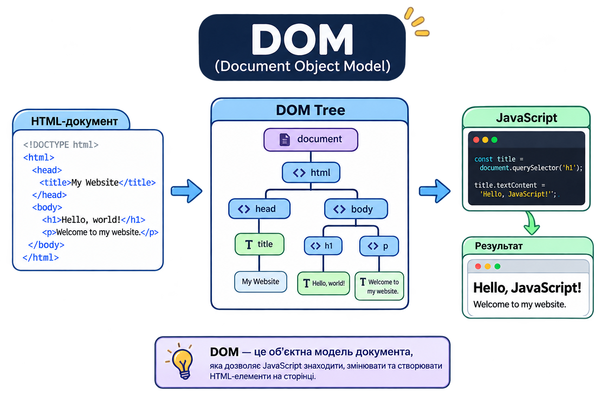

DOM (Document Object Model) — це об'єктна модель документа, яка дозволяє JavaScript взаємодіяти з HTML-сторінкою: знаходити елементи, змінювати їхній вміст, стилі, атрибути та реагувати на дії користувача.
Коли браузер завантажує HTML-документ, він перетворює його на структуру об'єктів — дерево DOM (DOM Tree).

Завдяки DOM JavaScript може:
- Знаходити HTML-елементи - наприклад, заголовки, кнопки, зображення.
- Змінювати вміст - змінювати текст або HTML.
- Змінювати стилі - колір, розмір, відступи.
- Додавати та видаляти елементи - створювати нові блоки на сторінці.
- Обробляти події - натискання кнопок, введення тексту тощо.
HTML
<h1 id="title">Hello!</h1>
JAVA SCRIPT
const title = document.getElementById("title");
title.textContent = "Hello, JavaScript!";
JavaScript знаходить заголовок
за його id і змінює текст.
DOM Tree (дерево DOM) — це ієрархічна структура, у якій усі вузли документа розташовані у вигляді дерева та пов'язані між собою.
Node (вузол) — це окрема частина DOM-дерева. Кожен HTML-елемент, текст або коментар може бути окремим вузлом.
У DOM існують різні типи вузлів:
| Тип вузла | Опис | Приклад |
|---|---|---|
| Document | Весь HTML-документ | document |
| Element | HTML-елемент | <p>, <div> |
| Text | Текст усередині елемента | Hello! |
| Comment | HTML-коментар | <!-- comment --> |
Важливо: кожен Element є Node, але не кожен Node є Element.
У DOM є спеціальні поняття, які описують взаємне розташування вузлів:
| Термін | Значення |
|---|---|
| Parent | Батьківський вузол |
| Child | Дочірній вузол |
| Sibling | Сусідній вузол |
| Ancestor | Будь-який вузол-предок |
| Descendant | Будь-який вузол-нащадок |
HTML
<div>
<h1>Title</h1>
<p>Text</p>
</div>
div — Parent для h1 та p.
h1 та p — Children для div.
h1 та p — Siblings між собою.
Document Object
Document — це об'єкт, який представляє HTML-документ і надає JavaScript доступ до його вмісту.
Простіше кажучи, document — це точка входу для роботи JavaScript із HTML-сторінкою.
console.log(document);
У консолі браузера ми побачимо
об'єкт документа, який містить
інформацію про HTML-сторінку.
Найважливіші властивості об'єкта document:
| Властивість | Опис |
|---|---|
document.documentElement |
Повертає кореневий HTML-елемент <html>
|
document.head |
Повертає елемент <head> |
document.body |
Повертає елемент <body> |
document.title |
Повертає або змінює назву сторінки |
document.URL |
Повертає URL поточного документа |
document.domain |
Повертає домен документа (застаріла властивість, не рекомендована для використання) |
Приклади використання
1. Отримання HTML-елементів документа
const html = document.documentElement;
const head = document.head;
const body = document.body;
console.log(html);
console.log(head);
console.log(body);
За допомогою цих властивостей
ми можемо отримати доступ до
основних частин HTML-документа.
2. Отримання та зміна заголовка сторінки
// Отримуємо назву сторінки
console.log(document.title);
// Змінюємо назву сторінки
document.title = "My Website";
3. Отримання HTML-елементів документа
console.log(document.URL);
Повертає адресу поточного HTML-документа.
DOM Selection (Пошук HTML-елементів)
Для того, щоб знайти конкретний елемент на сторінці, наприклад, заголовок, кнопку або блок, JavaScript має спеціальні методи пошуку елементів.
Найпоширеніші методи пошуку елементів:
| Метод | Опис |
|---|---|
getElementById() |
Знаходить елемент за його id |
getElementsByClassName() |
Знаходить елементи за назвою класу |
getElementsByTagName() |
Знаходить елементи за назвою HTML-тега |
querySelector() |
Знаходить перший елемент, який відповідає CSS-селектору |
querySelectorAll() |
Знаходить усі елементи, які відповідають CSS-селектору |
Методи getElement...() не потребують CSS-синтаксису. У них ми вказуємо безпосередньо назву ID, класу або HTML-тегу.
// За ID — без символу #
document.getElementById("title");
// За класом — без символу .
document.getElementsByClassName("item");
// За назвою тегу
document.getElementsByTagName("p");
Методи querySelector() та querySelectorAll() потребують CSS-синтаксису, оскільки дозволяють шукати елементи за CSS-селекторами. Тому під час запису потрібно використовувати відповідні символи:
// За ID — використовуємо #
document.querySelector("#title");
// За класом — використовуємо .
document.querySelector(".item");
// За тегом — вказуємо назву тегу
document.querySelector("p");
// За вкладеністю елементів
document.querySelector("div .item");
// За атрибутом
document.querySelector("[type='text']");
Важливо запам'ятати
- getElementById() та querySelector() повертають один елемент або null, якщо його не знайдено.
- getElementsByClassName() та getElementsByTagName() повертають HTMLCollection.
- querySelectorAll() повертає NodeList.
- HTMLCollection — жива колекція, а NodeList, отриманий через querySelectorAll(), — статична.
DOM Navigation (Навігація DOM)
DOM Navigation — це можливість переміщатися між елементами HTML-документа за допомогою властивостей DOM.
Простіше кажучи, ми можемо знайти певний елемент і через нього отримати доступ до його батьківського елемента, дочірніх елементів або сусідніх елементів.
Основні властивості навігації DOM
| Властивість | Що повертає |
|---|---|
parentElement |
Батьківський HTML-елемент |
children |
Усі дочірні HTML-елементи |
firstElementChild |
Перший дочірній HTML-елемент |
lastElementChild |
Останній дочірній HTML-елемент |
nextElementSibling |
Наступний сусідній HTML-елемент |
previousElementSibling |
Попередній сусідній HTML-елемент |
Приклад використання
HTML
<div class="container">
<h2>Заголовок</h2>
<p>Перший абзац</p>
<p>Другий абзац</p>
</div>
JAVA SCRIPT
const container = document.querySelector(".container");
// Отримати батьківський елемент
container.parentElement;
// Отримати всі дочірні елементи
container.children;
// Отримати перший дочірній елемент
container.firstElementChild;
// Отримати останній дочірній елемент
container.lastElementChild;
А якщо ми хочемо перейти від
одного сусіднього елемента до іншого:
const firstParagraph = document.querySelector("p");
// Наступний сусідній елемент
firstParagraph.nextElementSibling;
// Попередній сусідній елемент
firstParagraph.previousElementSibling;
Важлива відмінність: Element та Node
| Властивості | Що враховують |
|---|---|
parentElement, children,
firstElementChild,
nextElementSibling
|
Тільки HTML-елементи |
parentNode, childNodes,
firstChild, nextSibling
|
Усі типи вузлів: елементи, текстові вузли, коментарі |
Наприклад, пробіли та переноси рядків між HTML-тегами браузер сприймає як текстові вузли. Тому для звичайної навігації між HTML-елементами часто зручніше використовувати властивості з Element у назві.
DOM Manipulation (Маніпуляції з DOM)
DOM Manipulation — це процес зміни HTML-документа за допомогою JavaScript: його вмісту, атрибутів, класів, стилів і самої структури.
1. Робота з вмістом (Working with Content)
textContent
дозволяє отримати або змінити весь текстовий вміст елемента, включно з текстом усередині вкладених елементів
HTML
<div class="container">
<h2>Привіт!</h2>
<p>Вивчаємо JavaScript</p>
</div>
JAVA SCRIPT
const container = document.querySelector(".container");
// Отримати текст
console.log(container.textContent);
// Змінити текст
container.textContent = "Новий текст";
У результаті весь попередній вміст елемента буде замінено звичайним текстом.
innerHTML
дозволяє отримати або змінити HTML-вміст елемента, включно з HTML-тегами
const container = document.querySelector(".container");
// Отримати HTML-вміст
console.log(container.innerHTML);
// Додати HTML-розмітку
container.innerHTML =
"<h2>Новий заголовок</h2>
<p>Новий текст</p>";
На відміну від textContent, браузер розпізнає HTML-теги та створює відповідні елементи.
innerText
дозволяє отримати або змінити текст, який відображається користувачу на сторінці
Синтаксис:
const container = document.querySelector(".container");
// Отримати видимий текст
console.log(container.innerText);
// Змінити текст
container.innerText = "Новий текст";
На відміну від textContent, ця властивість враховує видимість тексту та особливості його відображення на сторінці.
Важливо запам'ятати
- textContent - працює з текстом, включно з прихованим текстом.
- innerHTML - працює з HTML-розміткою.
- innerText - враховує видимість тексту на сторінці.
- Якщо присвоїти нове значення будь-якій із цих властивостей, попередній вміст елемента буде замінено.
2. Робота з атрибутами (Working with Attributes)
getAttribute()
дозволяє отримати значення певного атрибута HTML-елемента.
<img src="photo.jpg" alt="Фото">
// Отримати значення атрибута
const image = document.querySelector("img");
console.log(image.getAttribute("src"));
// "photo.jpg"
console.log(image.getAttribute("alt"));
// "Фото"
setAttribute()
дозволяє встановити нове значення атрибута або створити атрибут, якщо його ще немає.
const image = document.querySelector("img");
// Змінити значення атрибута
image.setAttribute("alt", "Нове фото");
// Додати новий атрибут
image.setAttribute("title", "Моє фото");
removeAttribute()
дозволяє видалити певний атрибут HTML-елемента.
const image = document.querySelector("img");
// Видалити атрибут
image.removeAttribute("alt");
Важливо запам'ятати
- getAttribute() - отримує значення атрибута.
- setAttribute() - встановлює або змінює атрибут.
- removeAttribute() - видаляє атрибут.
3. Робота з класами (Working with Classes)
classList.add()
дозволяє додати один або декілька CSS-класів до HTML-елемента.
const box = document.querySelector(".box");
// Додати клас
box.classList.add("active");
// Додати декілька класів
box.classList.add("active", "visible");
classList.remove()
дозволяє видалити один або декілька CSS-класів з HTML-елемента.
const box = document.querySelector(".box");
// Видалити клас
box.classList.remove("active");
// Видалити декілька класів
box.classList.remove("active", "visible");
classList.toggle()
додає клас, якщо його немає, або видаляє, якщо він уже присутній.
const box = document.querySelector(".box");
// Перемикання класу
box.classList.toggle("active");
classList.contains()
перевіряє, чи має HTML-елемент певний CSS-клас. Повертає true або false.
const box = document.querySelector(".box");
// Перевірити наявність класу
console.log(box.classList.contains("active"));
// true або false
Важливо запам'ятати
- add() - додає CSS-клас.
- remove() - видаляє CSS-клас.
- toggle() - перемикає наявність CSS-класу.
- contains() - перевіряє наявність CSS-класу.
4. Робота зі стилями (Working with Styles)
element.style
дозволяє отримувати та змінювати CSS-стилі HTML-елемента безпосередньо через JavaScript.
<div class="box">Привіт!</div>
const box = document.querySelector(".box");
// Змінити колір тексту
box.style.color = "red";
// Змінити колір фону
box.style.backgroundColor = "lightblue";
// Змінити розмір шрифту
box.style.fontSize = "20px";
// Видалити inline-стиль
box.style.color = "";
Назви CSS-властивостей записуються у форматі camelCase: background-color → backgroundColor.
Важливо запам'ятати
- element.style - змінює стилі безпосередньо в атрибуті style HTML-елемента.
- Для CSS-властивостей із дефісом використовуємо camelCase, наприклад font-size → fontSize.
- Через element.style можна отримати переважно inline-стилі, а не всі стилі, задані через CSS-файли.
5. Створення елементів (Creating Elements)
createElement()
дозволяє створити новий HTML-елемент за допомогою JavaScript.
// Створити новий елемент
const newParagraph = document.createElement("p");
// Додати текст
newParagraph.textContent = "Новий абзац";
Створений елемент поки що не відображається на сторінці, оскільки його ще не додано до DOM.
append()
додає один або декілька елементів чи текстових значень у кінець вмісту батьківського елемента.
const container = document.querySelector(".container");
const paragraph = document.createElement("p");
paragraph.textContent = "Новий абзац";
// Додати в кінець контейнера
container.append(paragraph);
prepend()
додає один або декілька елементів чи текстових значень на початок вмісту батьківського елемента.
const container = document.querySelector(".container");
const paragraph = document.createElement("p");
paragraph.textContent = "Новий абзац";
// Додати на початок контейнера
container.prepend(paragraph);
Важливо запам'ятати
- createElement() - створює новий HTML-елемент.
- append() - додає елемент у кінець батьківського елемента.
- prepend() - додає елемент на початок батьківського елемента.
- append() та prepend() можуть додавати як HTML-елементи, так і звичайний текст.
6. Видалення та заміна елементів (Removing and Replacing Elements)
remove()
дозволяє видалити HTML-елемент безпосередньо з DOM.
const paragraph = document.querySelector("p");
// Видалити елемент
paragraph.remove();
replaceWith()
дозволяє замінити HTML-елемент іншим елементом або текстом.
const oldParagraph = document.querySelector("p");
// Створити новий елемент
const newParagraph = document.createElement("p");
newParagraph.textContent = "Новий текст";
// Замінити старий елемент
oldParagraph.replaceWith(newParagraph);
replaceChildren()
видаляє всі дочірні елементи батьківського елемента та замінює їх новими елементами або текстом.
const container = document.querySelector(".container");
const newParagraph = document.createElement("p");
newParagraph.textContent = "Новий вміст";
// Замінити весь дочірній вміст
container.replaceChildren(newParagraph);
Важливо запам'ятати
- remove() - видаляє сам HTML-елемент.
- replaceWith() - замінює конкретний HTML-елемент.
- replaceChildren() - замінює весь дочірній вміст батьківського елемента.
7. Завантаження DOM (DOMContentLoaded)
DOMContentLoaded
це подія, яка спрацьовує після того, як браузер повністю завантажив та обробив HTML-документ, побудувавши DOM-дерево.
document.addEventListener("DOMContentLoaded", function () {
// Код виконається після побудови DOM
const title = document.querySelector("h1");
console.log(title);
});
Це дозволяє переконатися, що HTML-елементи вже доступні для пошуку та роботи з ними через JavaScript.
Важливо запам'ятати
- DOMContentLoaded - подія, яка спрацьовує після побудови DOM-дерева.
- Вона дозволяє безпечно виконувати JavaScript-код, який звертається до HTML-елементів.
- Ця подія не очікує повного завантаження зображень, відео та інших ресурсів сторінки.